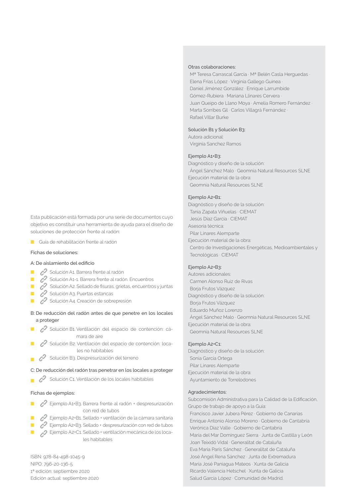
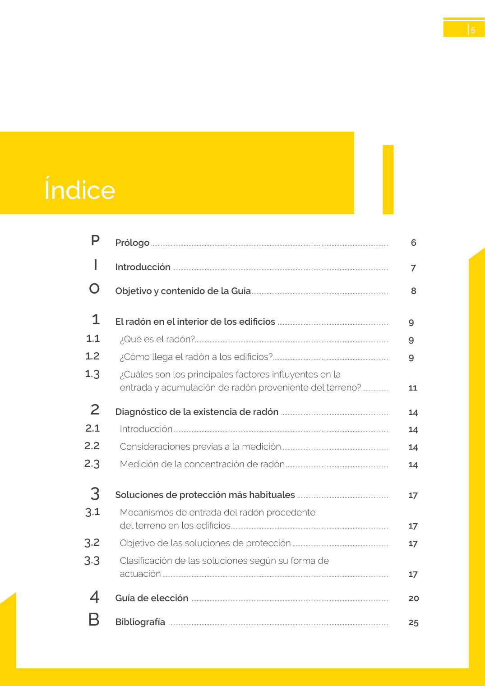

<!doctype html>
<html lang="es"><head><meta charset="utf-8">
<meta name="viewport" content="width=device-width, initial-scale=1">
<title>GUIA · sección HS6 Protección frente a la exposición al radón.</title><link rel="stylesheet" href="../estilo.css">
</head><body>
<nav><a href="../index.html">Índice</a> › <a href="../doc/guia-pdf-f3314b0414fe-sin-fecha-e58e54b822cf.html">GUIA</a> › a0003</nav>

<header class="meta">
<p><a href="../doc/guia-pdf-f3314b0414fe-sin-fecha-e58e54b822cf.html">GUIA</a> · sección HS6 Protección frente a la exposición al radón. · versión sin-fecha · capa guia</p>
</header>
<div class="cita"><strong>Cita:</strong> GUIA · ID técnico a0003 · sección HS6 Protección frente a la exposición al radón. · páginas físicas pág. 2-5 (impresas: ['2', '3', '4', '5'])</div>
<p>Formatos: <a href="../../contenido/docs/GUIA-PDF-f3314b0414fe/sin-fecha__e58e54b822cf/apartado/a0003__seccion-hs6-proteccion-frente-a-la-exposicion-al-radon.json">JSON compacto</a> · <a href="../../contenido/docs/GUIA-PDF-f3314b0414fe/sin-fecha__e58e54b822cf/apartado/a0003__seccion-hs6-proteccion-frente-a-la-exposicion-al-radon.md">Markdown</a> · <a href="../../contenido/docs/GUIA-PDF-f3314b0414fe/sin-fecha__e58e54b822cf/fuente.pdf">PDF fuente</a></p>
<p><a href="../doc/guia-pdf-f3314b0414fe-sin-fecha-e58e54b822cf.html">Ámbito del documento</a> · <a href="../doc/guia-pdf-f3314b0414fe-sin-fecha-e58e54b822cf.html#ambito">texto del ámbito</a> ·
<a href="../doc/guia-pdf-f3314b0414fe-sin-fecha-e58e54b822cf.html">documento y tablas</a></p>
<nav><a href="guia-pdf-f3314b0414fe-sin-fecha-e58e54b822cf__a0002.html">← Fichas incluidas</a> <a href="guia-pdf-f3314b0414fe-sin-fecha-e58e54b822cf__a0004.html">I →</a></nav>
<h1>sección HS6 Protección frente a la exposición al radón.</h1>
<p>Tipo: tablas, figuras · nivel 2 · sección estimada: sección HS6 Protección frente a la exposición al radón. · padre: </p>
<pre class="literal">sección HS6 Protección frente a la exposición al radón.
Dirección y Coordinación:
Ministerio de Transportes, Movilidad y Agenda Urbana
Isabel Marcos Anasagasti
Raquel Lara Campos
Eduardo González de Prado
Instituto de ciencias de la construcción Eduardo Torroja  CSIC
Pilar Linares Alemparte
Autoras:
Pilar Linares Alemparte
Sonia García Ortega
Colaboradoras:
Virginia Sánchez Ramos
Karina Angélica García Pardo
Edita:
Centro de Publicaciones Secretaría General Técnica
Ministerio de Transportes, Movilidad y Agenda Urbana©
Entidad colaboradora:
Consejo Superior de Investigaciones Científicas · CSIC
Ministerio de Ciencia e Innovación
Catálogo de publicaciones de la Administración General
del Estado: publicacionesoficiales.boe.es
Centro virtual de publicaciones del Ministerio de Transpor­
tes, Movilidad y Agenda Urbana: www.mitma.gob.es
Página web del Código Técnico de la Edificación:
www.codigotecnico.org
Maquetación y diseño gráfico:
Lapizmente. Estrategia • Diseño Gráfico
Fotografía portada:
Sonia García Ortega
Los contenidos o ideas recogidas en este documento pertenecen a
sus autores. Este documento está basado en el conocimiento dispo­
nible en el momento de su publicación. No se aceptará por las institu­
ciones ni los autores implicados responsabilidad de ningún tipo por el
uso de estas recomendaciones. Las figuras tienen carácter ilustrativo
y no deben interpretarse como detalles constructivos.
Se permite la reproducción total o parcial del contenido de este
documento siempre y cuando se cite la fuente original y a sus
autores.
SECRETARÍA GENERAL DE
AGENDA URBANA Y VIVIENDA
DIRECCIÓN GENERAL DE
AGENDA URBANAY ARQUITECTURA
GOBIERNO
DE ESPAÑA
MINISTERIO
DE TRANSPORTES, MOVILIDAD
Y AGENDA URBANA
GOBIERNO
DE ESPAÑA
MINISTERIO
DE CIENCIA
E INNOVACIÓN

Otras colaboraciones:
Mª Teresa Carrascal García · Mª Belén Casla Herguedas ·
Elena Frías López · Virginia Gallego Guinea ·
Daniel Jiménez González · Enrique Larrumbide
Gómez-Rubiera · Mariana Llinares Cervera ·
Juan Queipo de Llano Moya · Amelia Romero Fernández ·
Marta Sorribes Gil · Carlos Villagrá Fernández ·
Rafael Villar Burke
Solución B1 y Solución B3:
Autora adicional:
Virginia Sanchez Ramos
Ejemplo A1+B3:
Diagnóstico y diseño de la solución:
Ángel Sánchez Malo · Geomnia Natural Resources SLNE
Ejecución material de la obra:
Geomnia Natural Resources SLNE
Ejemplo A2+B1:
Diagnóstico y diseño de la solución:
Tania Zapata Viñuelas · CIEMAT
Jesús Díaz García · CIEMAT
Asesoría técnica:
Pilar Linares Alemparte
Ejecución material de la obra:
Centro de Investigaciones Energéticas, Medioambientales y
Tecnológicas · CIEMAT
Ejemplo A2+B3:
Autores adicionales:
Carmen Alonso Ruiz de Rivas
Borja Frutos Vázquez
Diagnóstico y diseño de la solución:
Borja Frutos Vázquez
Eduardo Muñoz Lorenzo
Ángel Sánchez Malo · Geomnia Natural Resources SLNE
Ejecución material de la obra:
Geomnia Natural Resources SLNE
Ejemplo A2+C1:
Diagnóstico y diseño de la solución:
Sonia García Ortega
Pilar Linares Alemparte
Ejecución material de la obra:
Ayuntamiento de Torrelodones
Agradecimientos:
Subcomisión Administrativa para la Calidad de la Edificación,
Grupo de trabajo de apoyo a la Guía:
Francisco Javier Jubera Pérez · Gobierno de Canarias
Enrique Antonio Alonso Moreno · Gobierno de Cantabria
Verónica Díaz Valle · Gobierno de Cantabria
María del Mar Domínguez Sierra · Junta de Castilla y León
Joan Teixidó Vidal · Generalitat de Cataluña
Eva María París Sánchez · Generalitat de Cataluña
José Ángel Rena Sánchez · Junta de Extremadura
María José Paniagua Mateos · Xunta de Galicia
Ricardo Valencia Hetschel · Xunta de Galicia
Salud García López · Comunidad de Madrid.
Esta publicación está formada por una serie de documentos cuyo
objetivo es constituir una herramienta de ayuda para el diseño de
soluciones de protección frente al radón:
■
Guía de rehabilitación frente al radón
Fichas de soluciones:
A: De aislamiento del edificio
■
Solución A1. Barrera frente al radón
■
Solución A1-1. Barrera frente al radón. Encuentros
■
Solución A2. Sellado de fisuras, grietas, encuentros y juntas
■
Solución A3. Puertas estancas
■
Solución A4. Creación de sobrepresión
B: De reducción del radón antes de que penetre en los locales
a proteger
■
Solución B1. Ventilación del espacio de contención: cá­
mara de aire
■
Solución B2. Ventilación del espacio de contención: loca­
les no habitables
■
Solución B3. Despresurización del terreno
C: De reducción del radón tras penetrar en los locales a proteger
■
Solución C1. Ventilación de los locales habitables
Fichas de ejemplos:
■
Ejemplo A1+B3. Barrera frente al radón + despresurización
con red de tubos
■
Ejemplo A2+B1. Sellado + ventilación de la cámara sanitaria
■
Ejemplo A2+B3.  Sellado + despresurización con red de tubos
■
Ejemplo A2+C1. Sellado + ventilación mecánica de los loca-
les habitables
ISBN: 978-84-498-1045-9
NIPO: 796-20-136-5
1ª edición: septiembre 2020
Edición actual: septiembre 2020

guía

Índice</pre>
<h2>Tablas en estas páginas</h2><ul><li>p. 2 · <a href="../../contenido/docs/GUIA-PDF-f3314b0414fe/sin-fecha__e58e54b822cf/tabla/p0002_t01.json">p0002_t01.json</a> · <a href="../../contenido/docs/GUIA-PDF-f3314b0414fe/sin-fecha__e58e54b822cf/tabla/p0002_t01.csv">.csv</a></li><li>p. 4 · <a href="../../contenido/docs/GUIA-PDF-f3314b0414fe/sin-fecha__e58e54b822cf/tabla/p0004_t01.json">p0004_t01.json</a> · <a href="../../contenido/docs/GUIA-PDF-f3314b0414fe/sin-fecha__e58e54b822cf/tabla/p0004_t01.csv">.csv</a></li><li>p. 5 · <a href="../../contenido/docs/GUIA-PDF-f3314b0414fe/sin-fecha__e58e54b822cf/tabla/p0005_t01.json">p0005_t01.json</a> · <a href="../../contenido/docs/GUIA-PDF-f3314b0414fe/sin-fecha__e58e54b822cf/tabla/p0005_t01.csv">.csv</a></li></ul><h2>Página visual</h2><figure><a href="../../contenido/docs/GUIA-PDF-f3314b0414fe/sin-fecha__e58e54b822cf/figura/p0002.png"></a><figcaption>Página visual 2 (fuente para fórmulas/tablas/figuras)</figcaption></figure><figure><a href="../../contenido/docs/GUIA-PDF-f3314b0414fe/sin-fecha__e58e54b822cf/figura/p0003.png"></a><figcaption>Página visual 3 (fuente para fórmulas/tablas/figuras)</figcaption></figure><figure><a href="../../contenido/docs/GUIA-PDF-f3314b0414fe/sin-fecha__e58e54b822cf/figura/p0004.png"></a><figcaption>Página visual 4 (fuente para fórmulas/tablas/figuras)</figcaption></figure><figure><a href="../../contenido/docs/GUIA-PDF-f3314b0414fe/sin-fecha__e58e54b822cf/figura/p0005.png"></a><figcaption>Página visual 5 (fuente para fórmulas/tablas/figuras)</figcaption></figure><p class="aviso">PDF fuente redistribuible: copia fiel enlazada en esta página (SHA256 verificado).</p>
<footer>Generado estáticamente desde JSON normalizado; sin JavaScript ni servicios externos.
El JSON es la fuente; este HTML es caché reproducible.</footer>
</body></html>
